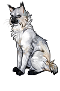

Хрупкий Оленёнок — лесной кот с вытянутым телом, бледной шерстью и глазами цвета холодного тумана. О нём шепчутся как о «тихом» — коте, которого отметил древний Хозяин Чащи.
Он слышит лес раньше ветра, видит вещие сны и слишком долго смотрит в темноту между деревьев. После его снов в чаще всегда что-то меняется, а меж крон деревьев выступают белые рога, пугающие своим ярым величиием.

⠀
⠀
⠀
⠀
⠀
⠀
⠀
⠀
Хрупкий Оленёнок родился поздней осенью, в сезон холодных дождей,
когда лес уже начинал гнить под первым инеем. В ту ночь старые сосны
скрипели так громко, будто переговаривались между собой, а за лагерем
долго слышались оленьи копыта — тяжёлые, медленные, словно кто-то
ходил кругами возле самой границы света. Его мать говорила, что перед
родами видела среди тумана высокого белого оленя. Не зверя. Что-то
старше. Он стоял между деревьев неподвижно, и из его рогов свисал мох.
Наутро один из старейшин умер во сне. С тех пор о Хрупкооленёнке
начали шептаться.
Он рос тихим котёнком — слишком тихим. Не
плакал, редко играл с другими, часто смотрел в чащу так внимательно,
будто слушал кого-то. Иногда посреди разговора внезапно замирал,
навострив уши, а потом уходил в глубину палаток, не объясняя причин. И
всегда возвращался до того, как начинался дождь.
С возрастом
странностей стало больше. Птицы не кричали рядом с ним. Лисы не
подходили к границам, когда он был поблизости. А зимой на снегу рядом
с его следами иногда находили отпечатки копыт. Только одной пары.
Будто кто-то шёл рядом. Хрупкий Оленёнок никому не рассказывал о своих
снах. Во сне лес был другим — древним, бесконечно тёмным и сырым.
Деревья там стояли слишком близко друг к другу, а между стволами
медленно двигалось что-то рогатое. Он никогда не видел его полностью.
Только белые ветвистые рога, возникающие в тумане, и тусклый блеск
глаз, похожих на болотную воду. Иногда существо говорило с ним. Не
словами. Скрипом ветвей. Шёпотом хвои. Треском льда под лапами. После
таких снов в лесу всегда кто-нибудь пропадал.
Старики начали
вспоминать древнюю легенду — будто в самой глубокой части леса есть
тропа, по которой ходит Хозяин Чащи. Не дух и не зверь, а что-то
между. Говорили, что он не любит огонь, громкие голоса и тех, кто
убивает ради забавы. А ещё — что иногда он оставляет метку на одном
живом существе, чтобы слышать лес его ушами. Таких меченых называли
«тихими». Они чувствовали смерть раньше других.
Хрупкий Оленёнок
никогда не признавался, что знает эту легенду. Но каждую ночь перед
сном он оставляет у корней старого дуба перья, ягоды или кости мелкой
добычи. И никогда не оборачивается, уходя от дерева. Потому что
однажды, ещё будучи котёнком, он всё-таки обернулся. И увидел между
стволами белые рога. Слишком высоко над землёй.
Старые коты говорили, что лес помнит всё. Помнит кровь, впитавшуюся в
корни. Помнит кости под мхом. Помнит имена тех, кто ушёл в чащу и не
вернулся обратно. Ночами, когда ветер проходил сквозь верхушки сосен,
казалось, будто сам лес тяжело дышит во сне — медленно, глубоко,
по-звериному. Тогда котята жались ближе к старшим и старались не
смотреть в темноту между деревьев, потому что именно там, в сыром
тумане, иногда появлялись белые рога.
Легенда была старше племён. Старше лагерей, троп и меток. Её не
рассказывали полностью — только обрывками, тихим голосом, будто
боялись, что чаща услышит. Когда-то лес был другим. Никто не знал, где
он начинался и где заканчивался. Сосны стояли так тесно, что даже луна
не могла пробиться сквозь ветви, а земля под лапами была мягкой от
вековой хвои. В те времена звери жили осторожно. Они брали у леса
ровно столько, сколько нужно, и всегда оставляли что-то взамен: перья,
ягоды, кости добычи.
Но потом пришли те, кто перестал бояться
чащи. Они убивали больше, чем могли съесть. Ломали молодые деревья
ради игры. Оставляли добычу гнить. И лес долго терпел их, пока однажды
не замолчал. В ту ночь исчез ветер. Птицы перестали петь. Реки будто
остановились. Даже сверчки стихли в траве. А потом из тумана вышел Он.
Никто не видел его полностью. Лишь длинные чёрные ноги, похожие на
обугленные стволы, и огромные белые рога, заросшие мхом и серым
лишайником. Они тянулись между ветвей, словно маленький мёртвый лес
рос прямо из его головы. Он двигался бесшумно.
Только иногда
где-то далеко раздавался звук копыт — медленный, глухой, будто кто-то
бил по сырой земле под толщей воды. Говорили, где проходит Хозяин
Чащи, лес перестаёт быть обычным. Туман становится густым, как шерсть,
деревья начинают казаться выше, а тропы внезапно исчезают. Можно идти
вперёд часами и всё равно возвращаться к одному и тому же месту. А
потом увидеть между стволами огромные рога. Старые коты верили, что он
не охотится. Он выбирает. Выбирает тех, кто забыл древний страх перед
лесом. Тех, кто проливал кровь ради удовольствия. Тех, кто смеялся над
смертью и считал чащу просто местом для добычи.
Такие исчезали. Иногда находили только следы копыт вокруг их запаха.
Иногда — клочья шерсти на корнях. А иногда не оставалось ничего, кроме
странной тишины, от которой шерсть поднималась дыбом. Но страшнее
всего были не исчезнувшие. Страшнее были «тихие». Раз в много сезонов
Хозяин оставлял кого-то жить. Обычно слабого котёнка, потерявшегося
охотника или того, кто слишком долго смотрел в туман. После встречи с
ним такие коты менялись. Они начинали слышать лес. Не звуки — нет.
Что-то глубже. Скрип старых деревьев становился похож на слова. Ветер
будто предупреждал их о беде. Они просыпались среди ночи за мгновение
до бури и чувствовали смерть ещё до того, как она приходила в лагерь.
Но вместе с этим лес забирал их понемногу себе. Они становились
молчаливыми. Подолгу сидели у границы чащи. Избегали яркого света. И
всё чаще смотрели в темноту так, будто видели там кого-то знакомого.
Говорят, однажды такой кот обязательно услышит зов. Тихий звук копыт в
тумане. И если пойдёт следом за белыми рогами между деревьев — уже
никогда не вернётся обратно. Только в особенно холодные ночи другие
могут услышать его шаги рядом с Хозяином Чащи. Медленные. Тихие.
Словно сам лес идёт через темноту.
Хрупкий Оленёнок рос тихим котом — не из тех, кто прячется за чужими
спинами, а из тех, чьё молчание постепенно начинает тревожить
окружающих. В нём никогда не было шумной живости лесных котят. Даже
маленьким он двигался осторожно, будто боялся потревожить что-то
невидимое между деревьев.
Он почти всегда спокоен. Не холоден — именно спокоен той
странной лесной тишиной, которая бывает перед снегопадом или глубокой
ночью, когда перестают шуметь даже сосны. Хрупкий Оленёнок редко
говорит громко, редко смеётся и почти никогда не спорит. Его голос
негромкий, хрипловатый, словно он слишком долго молчал или слишком
часто дышал холодным туманом.
Многие считают его слабым. Он худой, осторожный, избегает
бессмысленных драк и никогда не пытается казаться страшнее, чем есть.
Хрупкий Оленёнок не любит причинять боль — даже добычу старается
убивать быстро, без лишней жестокости. После охоты он всегда какое-то
время сидит молча, будто мысленно просит у леса прощения за отнятую
жизнь. Но за этой мягкостью скрывается не трусость.
В нём есть
упрямая, болезненная стойкость. Он может дрожать от страха,
сомневаться, чувствовать себя бессильным — и всё равно пойдёт в самую
тёмную часть леса, если это нужно. Хрупкий Оленёнок редко действует
аккуратно, но решительно; если он сделал шаг вперёд, значит, уже
принял последствия.
Он очень наблюдателен. Замечает мелочи, на
которые другие не обращают внимания: изменившийся запах воздуха перед
бурей, внезапную тишину птиц, странно сломанную ветку у тропы. Иногда
кажется, будто он чувствует лес лучше, чем собственное племя. Среди
котов ему часто тяжело — слишком шумно, слишком много голосов и чужих
эмоций. В чаще, среди мокрых сосен и тумана, ему легче дышать.
Из-за этого Хрупкий Оленёнок кажется чужим. Он может внезапно уйти
посреди разговора, если услышит что-то в лесу. Может часами сидеть у
границы территории, глядя в темноту между деревьев. Иногда отвечает
невпопад, словно часть его мыслей находится где-то очень далеко.
И всё же в нём удивительно много заботы. Тихой, почти
незаметной. Он не умеет красиво утешать и редко говорит ласковые
слова, но всегда замечает чужую боль раньше остальных. Принесёт травы
заболевшему, молча сядет рядом с тем, кто переживает утрату, отдаст
свою добычу голодному котёнку так, будто это ничего не значит.
Есть в нём и что-то пугающее. Иногда Хрупкий Оленёнок замирает
посреди леса и начинает смотреть в чащу слишком внимательно. Иногда
внезапно знает то, чего не должен знать. А порой его взгляд становится
пустым и далёким, будто он слушает кого-то, кого рядом нет. Как
существо, которое слишком долго пробыло рядом с чем-то древним.
Хрупкий Оленёнок был длинным и тонким, будто лес выточил его из сырого
ветра, тумана и старой зимней коры. В нём не было тяжёлой силы —
только гибкость, настороженность и почти болезненная лёгкость.
Казалось, если подует особенно холодный ветер, он качнётся вместе с
верхушками сосен.
Его тело вытянутое, худое, с острыми линиями
под шерстью. Под тонкой кожей выступали лопатки и рёбра, а длинные
лапы казались слишком хрупкими для лесной жизни, словно принадлежали
не коту, а молодому оленю, впервые вышедшему в глубокий снег. Но в
этой слабости была странная лесная грация — тихая, осторожная, почти
призрачная.
Шерсть у него длинная лишь местами: на груди, шее,
щеках и хвосте она сбивается в влажные неровные пряди, будто её
постоянно трогает туман. Остальной мех короче, жёстче, взъерошен
ветром и сыростью. Он никогда не выглядит ухоженным — скорее так,
будто лес сам перебирает его шерсть холодными пальцами.
Окрас
Хрупкого Оленёнка напоминает зимний лес перед рассветом.
Цвет шерсти — бледный, почти белый, но не чистый снежный, а дымчатый,
тусклый, словно старый снег, пролежавший среди сосновых корней. По
спине и бокам растекаются серые пятна, похожие на влажные тени от
ветвей. Они не имеют чётких границ — будто туман въелся в шерсть и
остался там навсегда.
На его морде лежит тёмная маска.
Серо-чёрная, размытая, она тянется от глаз к носу, как след копоти или
тень от древесных ветвей. Из-за неё взгляд Хрупкого Оленёнка кажется
глубже и тяжелее, чем должен быть у такого молодого кота. Светлые
глаза — мутно-зелёные, с холодным янтарным отливом — всегда выглядят
так, будто в них отражается туман.
Уши крупные, острые, с
редкими кисточками на концах. На фоне бледной шерсти они кажутся почти
слишком тёмными по краям, словно их обожгла лесная ночь.
Лапы у него почти чёрные — цвета мокрых речных камней. Тьма медленно
поднимается от пальцев вверх, растворяясь в светлой шерсти тонкими
грязно-серыми разводами. Когда он идёт по лесу, кажется, будто тень
цепляется за его следы.
Особенно странно выглядит хвост — куцый, но тяжёлый от шерсти, с
резким переходом от светлого основания к тёмному концу. На самом
кончике мех собирается в спутанные пряди, напоминающие мокрые перья.
После дождя под гнётом воды хвост становится почти чёрным, как клочок
ночного тумана.
В сумерках Хрупкий Оленёнок почти растворяется
среди деревьев. Издалека видно только бледное движение между стволами,
холодный отблеск глаз и тонкие белые рога ветвей над его спиной.
Будет в будущем